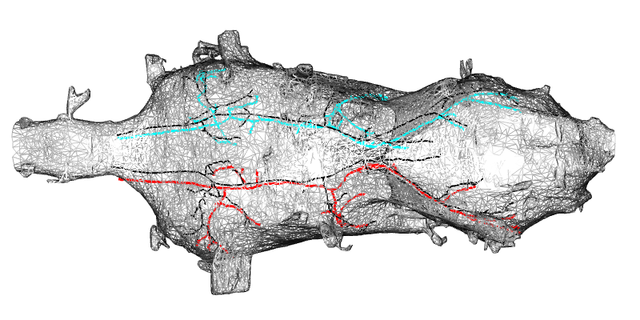

yakuba is a thin wrapper around malevnc for working with the Drosophila yakuba male VNC connectome dataset in the same style as malecns.
This dataset is currently in an in progress mode targeting an Autumn 2026 release. Principal collaborators include
- Hiroshi Shiozaki and David Stern, Janelia
- FlyEM team / inc Stuart Berg, Wyatt Korff and colleagues, Janelia
- Marta Costa and colleagues, Drosophila Connectomics Group, University of Cambridge
- Greg Jefferis, MRC LMB & University of Cambridge
- Kathi Eichler, University of Leipzig
- Michał Januszewski, Google
The initial package focuses on:
- dataset selection helpers
- neuprint metadata and connectivity queries
- body id lookup
- body annotation
- neuron skeletons
- bridging registration to
MANC
An example
This example shows how to read some descending neurons and co-visualise with the corresponding neurons in MANC.
library(malevnc)
library(yakuba)
library(nat)
library(nat.templatebrains)
MANC.tissue.surf.yak = xform_brain(
MANC.tissue.surf,
sample = "MANC",
reference = "yakuba"
)
wire3d(MANC.tissue.surf.yak)
dna02 = read_dyak_neurons("DNa02")
plot3d(dna02, lwd = 3)
# nb the default template space for MANC is calibrated in microns
# but for yakuba we use nm
dna02.manc = manc_read_neurons("DNa02", units = "microns")
dna02.manc.yak = xform_brain(
dna02.manc,
reference = "yakuba",
sample = "MANC"
)
# set up nice coords for the plot
par3d(zoom=0.458,
windowRect=c(0, 44, 800, 400+44),
userMatrix=matrix(c(
0.033, -0.999, 0.026, 0,
0.139, -0.022, -0.990, 0,
0.990, 0.036, 0.138, 0,
0.000, 0.000, 0.000, 1
), ncol=4))
plot3d(dna02.manc.yak, col = "black", lwd = 2)
MANC to yakuba registration example